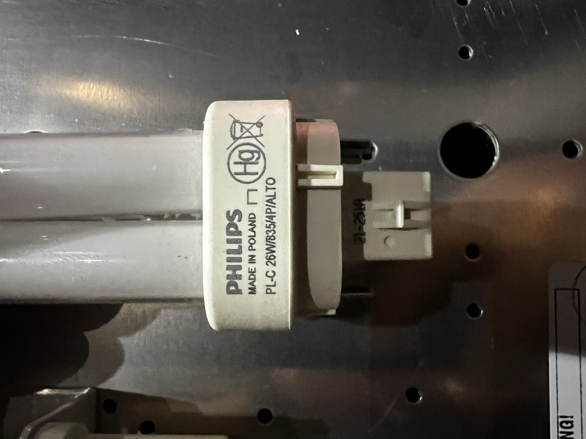
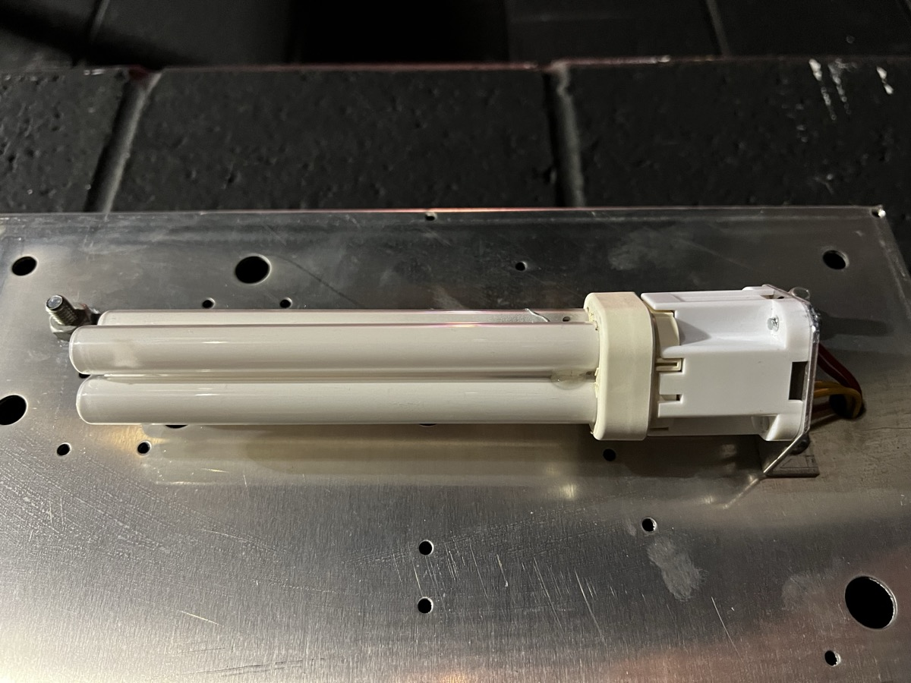
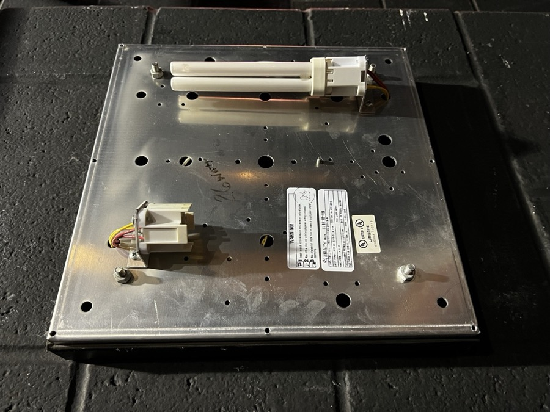
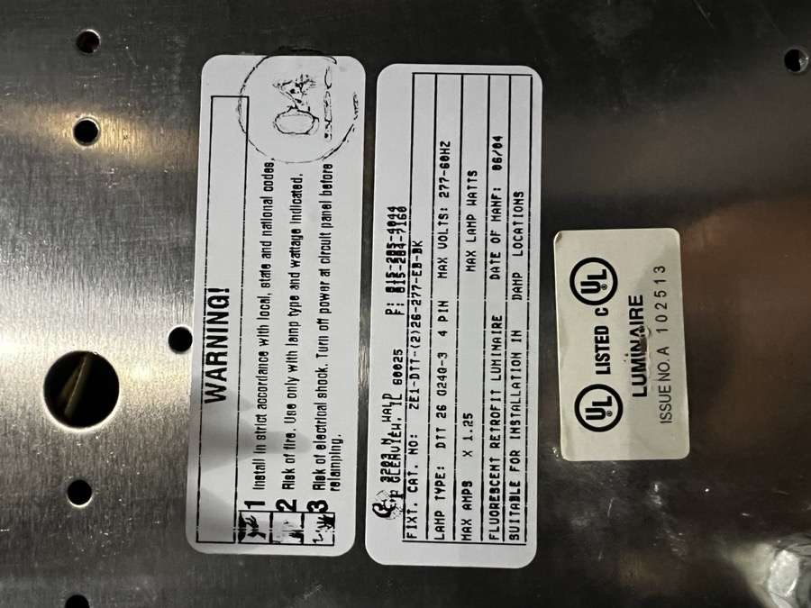

Equipment
UpRight X26N Scissor Lift
Shop and Stage
ADJ Mister Kool II
2x Fog Machines
- 700W heater
- Uses standard water-based fog juice and ice cubes
- ADJ Kool Fog uses Demineralized (Distilled) Water (64-68%), Propylene Glycol (<30%), Triethylene Glycol (<6%)
- Output Port: 140mm x 20mm
- Top of port 78mm from base
Fog Fluids
- Froggy’s Fog - Bog Fog
- Uses De-ionized/Distilled Water, Propylene Glycol, Triethylene Glycol
- Ratios are proprietary, noted as a trade secret
- Chauvet High Performance Haze Fluid (HFG)
- Contents only described as "osmozed water and glycol derivatives"
- Vegetable Glycerine & Propylene Glycol Base VGPG 70-30
- More "traditional" and DIY approach
Replacement Parts
Ear Pads for Stage Crew Headsets
Mfg. Model ULEPD (These easily twist and pop off) Need 6 total: 3x 2-Packs
Floor Sconces
PL7S/41/eco - 2-Pin Compact Flourescent
Blues Lights
- “Blues” Fixtures in Wings
- 26W Compact Fluorescent Lamp
- Philips PL-C 26 W 835 4P Alto
- The value 835 means 3500K color temperature. 841 would be 4100K.
Luminaire Fixture:
- ZE1-DTT-(2)26-277-EB-BK
- 12.5” Square
- 2” Deep
- 26W Bulb x2
- DTT 26 G24Q-3 4-Pin




